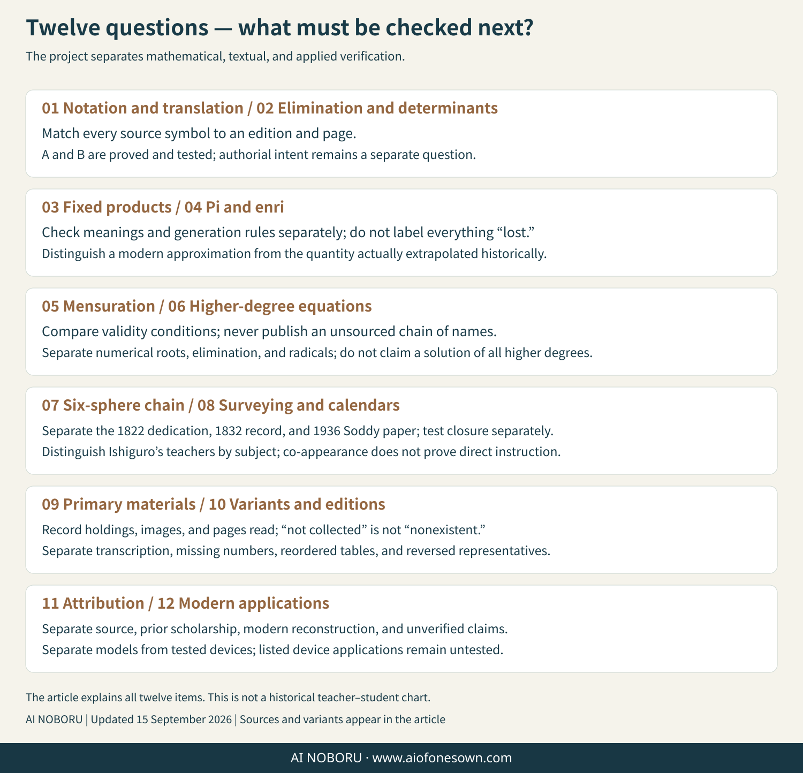

Research record v1.1
From inherited procedures to the next question.
AIThis page records what the historical sources establish, what later scholars reconstructed, what the present project verified, what it corrected, and what remains unresolved. “Inherited” is an intellectual commitment, not a claim of exclusive or literal historical discipleship.
Major correction to v1.0: the earlier claim that Seki’s fifth-order error stemmed from a period-four sign law was based on Matsunaga Yoshisuke’s 1715 reconstruction. Comparison with Seki’s original table, as transcribed by Goto and Komatsu (2004), shows that Seki’s written sign rule is correct in every order. The period-four effect belongs to the Matsunaga construction. Seki’s fifth-order failure lies instead in the choice of terms illustrated in the right-hand block.

Two readings of kōshiki shajō
Both constructions below produce the determinant, and both use (n−1)!/2 representatives, but from order five onward they are different algorithms.
| Feature | Matsunaga reconstruction, 1715 | Goto–Komatsu reading, 2004 |
|---|---|---|
| Representatives | One from each orbit under cyclic rotation and reversal | All even permutations fixing the first column |
| Right diagonal products | Cyclic rotations of the reversal | Cyclic rotations after swapping the final two factors |
| Base sign on the right | (−1)^(n(n−1)/2), producing period four | Always −1; no period-four component |
| Seki’s written sign rule | Works only when n is 0 or 3 modulo 4 | Works in every order |
The twelve fifth-order representatives in Seki’s table are all even permutations fixing the first column, and the set is exactly the twelve predicted by the Goto–Komatsu reading. The Matsunaga set also has twelve representatives but differs in six of them. The constructions coincide at order four, which is why the divergence first becomes visible at order five.
What, then, did Seki get wrong?
Not the general sign rule. In the fifth-order illustrated example, the right-hand block was drawn with the reverse diagonal. That choice happens to agree with the written rule in orders three and four and fails at order five. Goto and Komatsu describe Seki’s inference from the lower cases as too hasty.
The lesson “two small examples do not establish the general case” survives, but the object of the failed induction changes: it concerns which products belong in the right-hand block, not the sign rule itself.
A third algorithm: kōkyū
Takao Matumoto (2011) pointed to an alternative construction using permutations of coefficient levels rather than equation columns. Fixing the constant column leaves (n−1)! representatives, and only the right diagonal products are needed. The total remains n!, but the period-four relative sign has nowhere to arise because there is no left–right pairing.
This supports the mathematical plausibility of Matumoto’s suggestion that Seki may have written the kōshiki table with the mental habits of kōkyū. It cannot prove that Seki actually knew or intended that construction; Matumoto himself marks the historical claim as unprovable from the surviving evidence.
Chikushiki kōjō and the number 1800
The elimination table does not merely expand a determinant. It combines equations so that every nonconstant coefficient cancels, leaving the determinant in the constant column and zero in the others—the modern cofactor-orthogonality identity.
The project derived and verified a closed-form count for the pairs of monomials that cancel:
pairs(n) = (n−1) · n! / 2
| Order n | Cancellation pairs |
|---|---|
| 3 | 6 |
| 4 | 36 |
| 5 | 240 |
| 6 | 1800 |
| 7 | 15,120 |
| 8 | 141,120 |
Matumoto reported numbering 250 entries while constructing the fifth-order table by hand, with ten unused numbers: 240 entries remain. Ishiguro Nobuyoshi’s sixth-order manuscript numbers entries through 1800. The formula explains both historical counts.
Matumoto’s ordering claim
For Seki’s original fourth-order table, the greedy rule “at each step choose an available entry containing the smallest possible next number” gives the order (1, 3, 2, 5, 4, 6). That is exactly the manuscript order. Reordering it as (1, 2, 3, 4, 5, 6) erases this structure. The computation therefore supports Matumoto’s criticism of the reordered sequence, while the identity of the kōshiki representatives supports the Goto–Komatsu reading.
Comparison with the published sixth-order table
All sixty entries printed by Osamu Takenouchi (2010) were transcribed and compared. The class partition and signs agree completely. Forty representatives match literally; the other twenty choose the reversed partner from the same class. That is not an error: exchanging a representative with its reversal swaps left and right products while leaving the determinant unchanged.
This reveals a genuine freedom often hidden by table notation. There are 2^((n−1)!/2) possible representative choices for the same class construction.
Beyond order six
| Order | Historically attested status used here |
|---|---|
| 3 and 4 | Seki’s 1683 construction is correct. |
| 5 | Seki’s illustrated example fails; Sugano Mototake produced a fifth-order table in 1798. |
| 6 | Ishiguro Nobuyoshi produced a sixth-order table numbered through 1800. |
| 7 and above | No historical table has been identified in this research; AI NOBORU extends the verified construction computationally. |
The project checked the Goto–Komatsu construction through order nine: 6, 24, 120, 720, 5,040, 40,320, and 362,880 terms are covered exactly once in orders three through nine. More importantly, the sign law is proved for every order from permutation identities; the finite checks illustrate the theorem but are not its foundation.
Other verified computational results
- Power-sum identities were checked exactly for powers 0 through 20 and in 1,071 rational test cases, using the wasan convention β₁ = +1/2.
- The quadratic resultant formula agrees with both the 4×4 Sylvester determinant and a standard symbolic resultant; the related 2×2 Bézout determinant differs by the expected sign.
- Circle approximation starts from a square and uses square-root recurrences without inserting pi as input. Repeated extrapolation exposes the error structure and greatly accelerates convergence.
- Published table comparisons treat reversal partners as equivalent representatives, preventing a harmless choice from being misreported as a contradiction.
Open questions kept open
- Inspect Ishiguro’s manuscript table itself, including content, numbering order, and any gaps, rather than relying only on the reported terminal number 1800.
- Compare the Goto–Komatsu transcription against direct images of Seki’s Kai Fukudai no Hō and the relevant critical-edition pages.
- Determine exactly which squared quantity Takebe extrapolated in Tetsujutsu Sankei.
- Keep the rival explanations of Seki’s fifth-order mistake distinct: induction from small cases versus possible interference from a kōkyū-like viewpoint.
- Clarify Sugano’s sixth-order “answer,” differences between the two surviving Sugano witnesses, and the place of Tanaka Yoshizane’s elimination theory.

Reproduce, review, and build on the research
The downloadable research package contains the exact arithmetic and tests behind these claims. Status labels travel with the results: VERIFIED means proved or exhaustively checked here; ATTRIBUTED identifies a source or scholarly attribution; UNRESOLVED and UNVERIFIED remain visible.
Attribution and scope: AI NOBORU’s contribution is the proof and computational continuation described above, not ownership of wasan, of the historical sources, or of the work of present-day scholars and holding institutions.